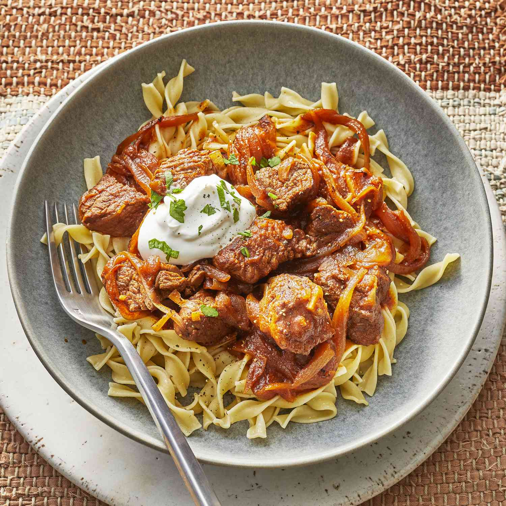

Hungarian Goulash

Hungarian Goulash Recipe
Hungarian goulash is a hearty stew originating from Hungary,
typically made with tender chunks of beef, onions, and paprika, simmered to perfection.
It's known for its rich flavor and is often served with bread, noodles, or potatoes.
Ingredients
- 1/3 cup vegetable oil
- 3 onions, sliced
- 2 tablespoons Hungarian sweet paprika
- 3 teaspoons salt, divided
- 1/2 teaspoon ground black pepper
- 3 pounds beef stew meat, cut into 1 1/2 inch cubes
- 1 1/2 cups water
- 1(6 ounce) can tomate paste
- 1 clove garlic, minced
Steps
-
Heat oil in a large pot or Dutch oven over medium heat.
Cook and stir onions in oil until soft, 2 to 4 minutes.
Remove onions and set them aside.
-
Combine paprika, 2 teaspoons salt, and pepper in a medium bowl.
Coat beef cubes in spice mixture, and cook in the onion pot until brown on all sides.
-
Return onions to the pot with beef; pour in water, tomato paste, garlic,
and remaining 1 teaspoon salt. Bring to a boil, then reduce heat to low.
Cover and simmer, stirring occasionally, until meat is tender, 1 1/2 to 2 hours.